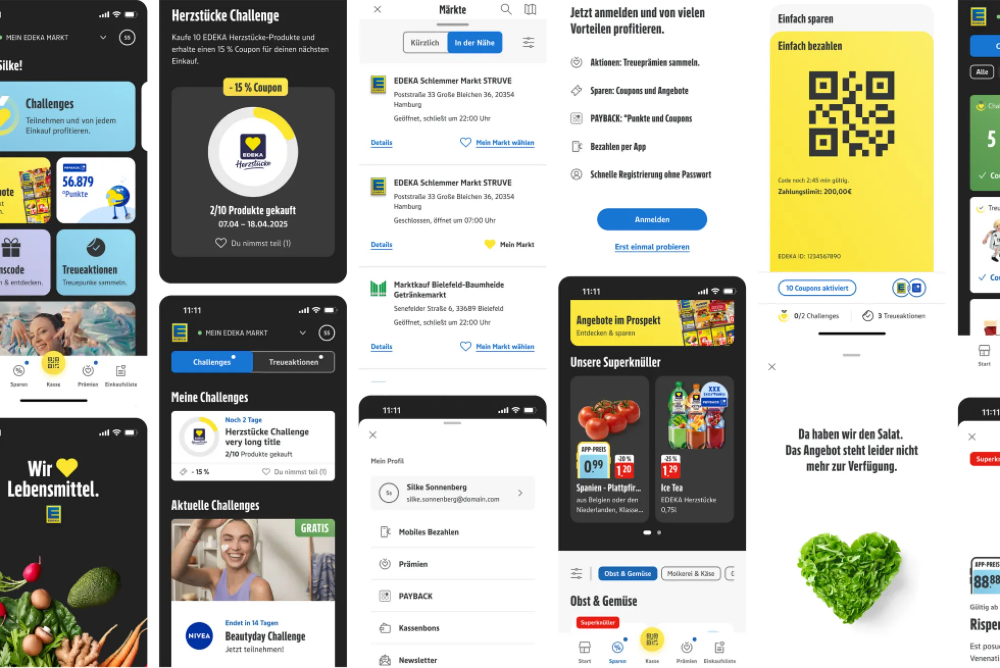
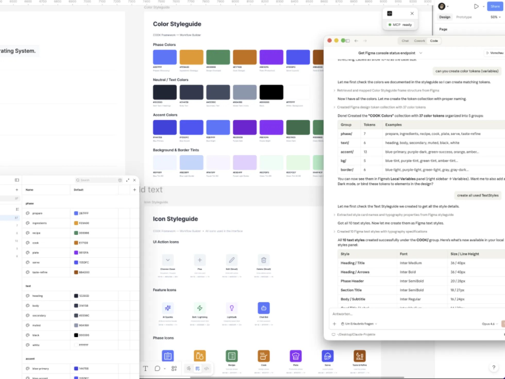
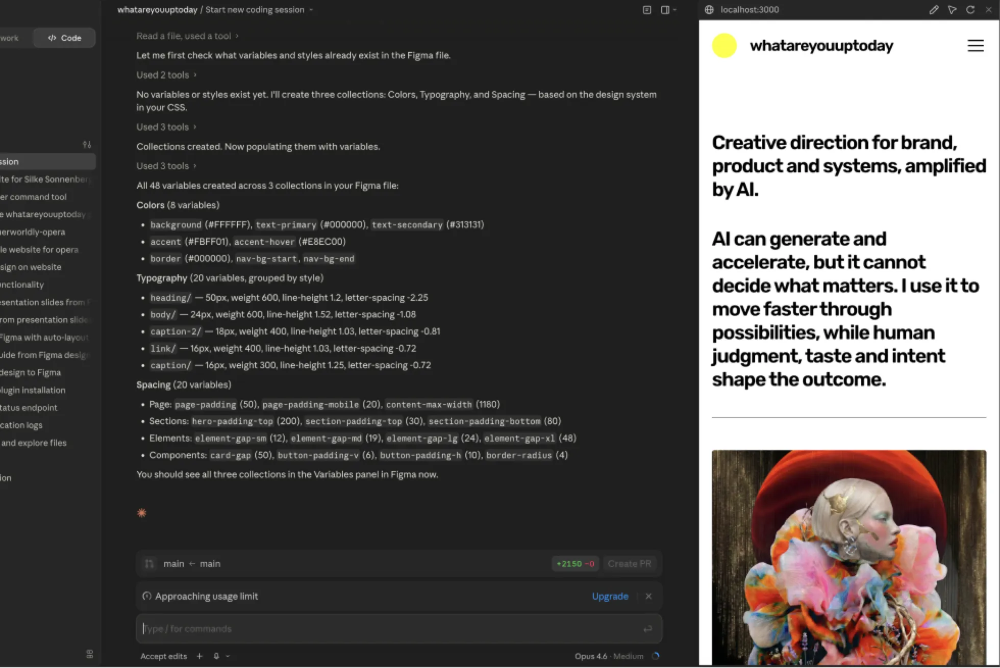
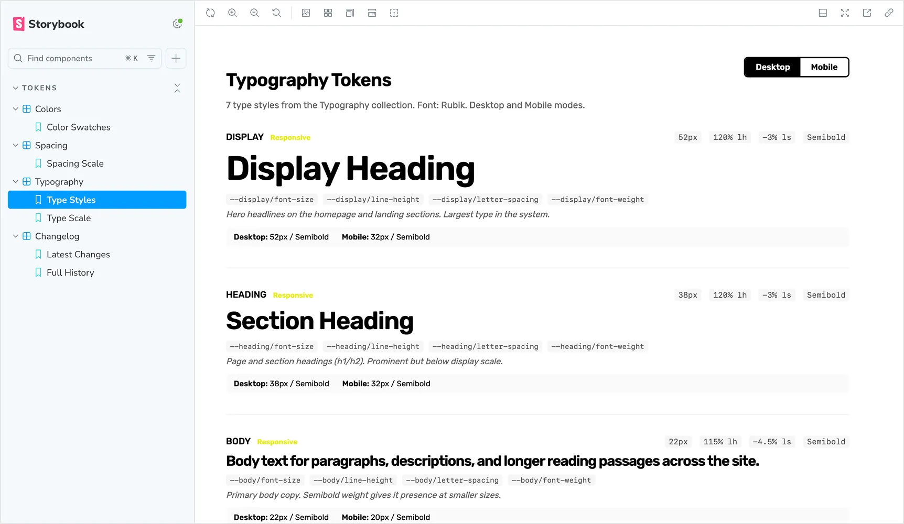

Agentic Design Systems
From static screens to adaptive systems.
I explore how AI can support the creation of interfaces, components and scalable design structures, from structured logic to rapid interactive prototypes. The focus extends beyond static screens toward adaptive systems built for consistency, collaboration and long-term scalability through documentation, governance, maintenance workflows and design QA, while human direction defines the experience, quality and intent.

System Foundations
Building modular systems that create consistency across products and teams.

AI-Assisted System Creation
Building an AI-readable design system from scratch with Claude. I set up MCP to connect Claude directly to Figma and Notion, accelerating structured interface creation and scalable system development.

Figma to Code
Reducing friction between design systems, development and production-ready interfaces. I move from Figma to production code with Claude, and prototype interactive UIs with Claude Code.

Governance & Scalability
Design systems built for consistency, collaboration and long-term scalability. I move design systems from Figma to code (Storybook, tokens, components), and write documentation and specs through AI-assisted workflows.
AI accelerates systems. Human judgment maintains clarity and consistency.
Brand identities and visual systems shaped through creative direction and AI exploration.
Brand & Visual Systems
Explore

Let's shape what's next.
Open for freelance projects, collaborations and AI-native creative systems.